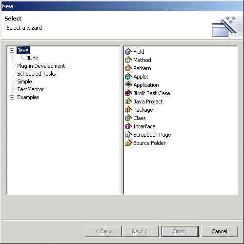
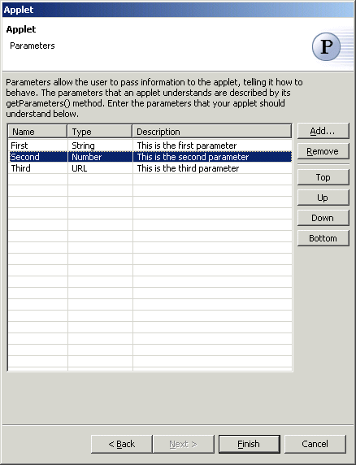

Java Applet Wizard
The Java Applet Wizard allows you to create new Java applets subclassed from either
java.applet.Applet or javax.swing.JApplet. New Applets can be created via the standard New
wizard by selecting the "Java" category, or via the popup "New" menu
or the icon on the main
toolbar. Applets can also be created by selecting the  Applet pattern in the
Applet pattern in the  Java Pattern Wizard.
Java Pattern Wizard.

Wizard
| Option | Description | Default |
| Source folder | Enter a source folder for the new class. Either type a valid source folder path or click Browse to select a source folder via a dialog. | The source folder of the element that was selected when the wizard was started. |
| Package | Enter a package to contain the new class. Either type a valid package name or click Browse to select a package via a dialog. | The package of the element that was selected when the wizard has been started. |
| Applet name | Type a name for the new applet class. | <Applet> |
| Superclass | Type or click Browse to select a superclass for this class. | <javax.swing.JApplet> or <java.awt.Applet> |
| Applet info | Enter the description of the applet | <blank> |

| Option | Description | Default |
| Would you like the wizard to generate a main() method and other support so that the applet can be run as a stand-alone application? | Select "Yes" to create an applet which can be run by itself or in an applet viewer, or select "No" to create an applet which can be only be run in an applet viewer | <No>. |
| Would you like the applet to run in a thread? This will allow the applet to perform tasks in the background, such as animation. | Select "Yes" to create an applet which runs in a
thread, or select "No" to not us a thread . |
<No> |
| Option | Description | Default |
| Keyboard events | Determines whether the applet will register itself as a listerner of keyboard events | <false>. |
| Mouse events. | Determines whether the applet will register itself as a listerner of mouse events | <false> |
| Mouse movement events | Determines whether the applet will register itself as a listerner of mouse motion events | <false> |
| Option | Description | Default |
| Write example | Determines whether example code is generated | <false> |
| Banner text. | Enter the banner text | <Welcome to CodePro> |
| destroy() | Determines whether a destroy() method is generated | <false> |
| start() | Determines whether a start() method is generated | <false> |
| stop() | Determines whether a stop() method is generated | <false> |

| Option | Description | Default |
| Parameters | Specify the name, type and description of the applet parameters | <blank> |